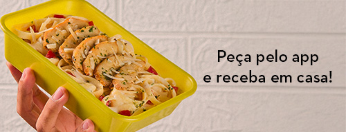
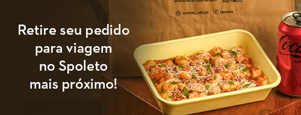
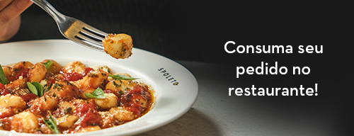

O Spoleto nasceu em 1999, no Rio de Janeiro, com um propósito muito claro: transformar a maneira como os brasileiros vivenciam a culinária italiana. Inspirados na tradição da Itália e na agilidade do modelo fast casual, criamos uma experiência em que cada cliente pode montar seu próprio prato, escolhendo a massa, o molho e os ingredientes, enquanto acompanha tudo sendo preparado na hora. Nosso nome foi inspirado na cidade italiana de Spoleto, refletindo nossa essência e conexão com a cultura italiana.
Desde o início, acreditamos na personalização, na qualidade dos ingredientes e em um atendimento dinâmico e próximo. Crescemos por meio do sistema de franquias e expandimos nossa presença por diversas regiões do Brasil, sempre mantendo nosso compromisso com sabor, praticidade e inovação. Em 2007, passamos a fazer parte do Grupo Trigo, fortalecendo ainda mais nossa estrutura e ampliando nossas possibilidades de crescimento.
Ao longo da nossa trajetória, também nos destacamos por campanhas criativas e bem-humoradas, que traduzem nossa personalidade leve e autêntica. Hoje, continuamos evoluindo para oferecer uma experiência cada vez melhor, combinando tradição italiana, liberdade de escolha e um ambiente acolhedor. No Spoleto, cada prato é único — assim como cada pessoa que passa por aqui.